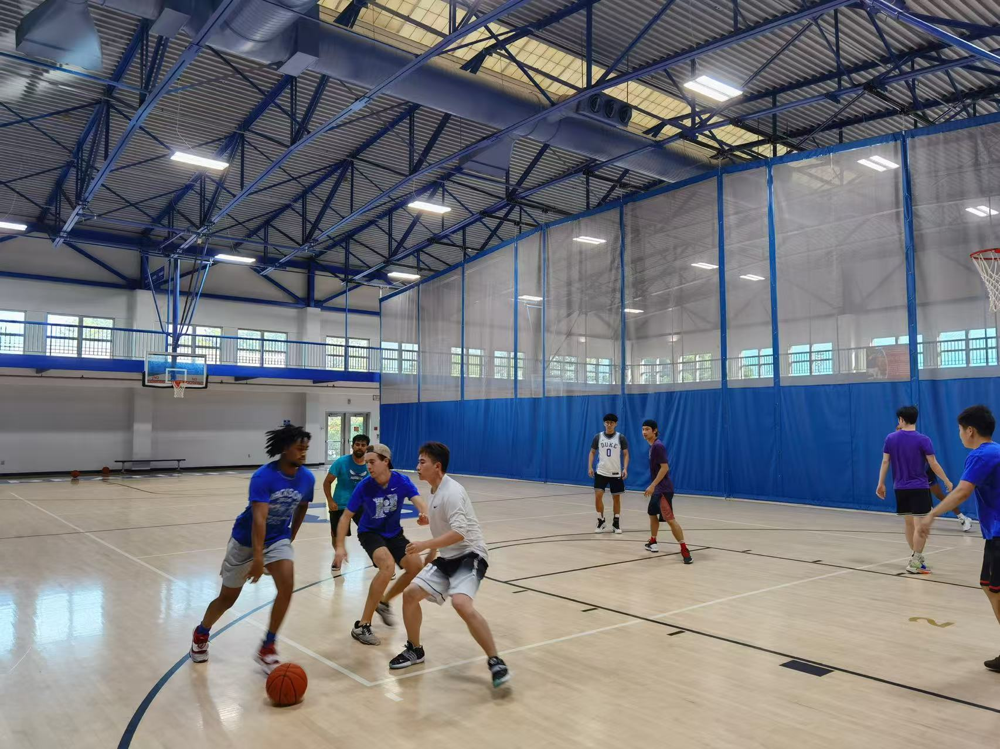
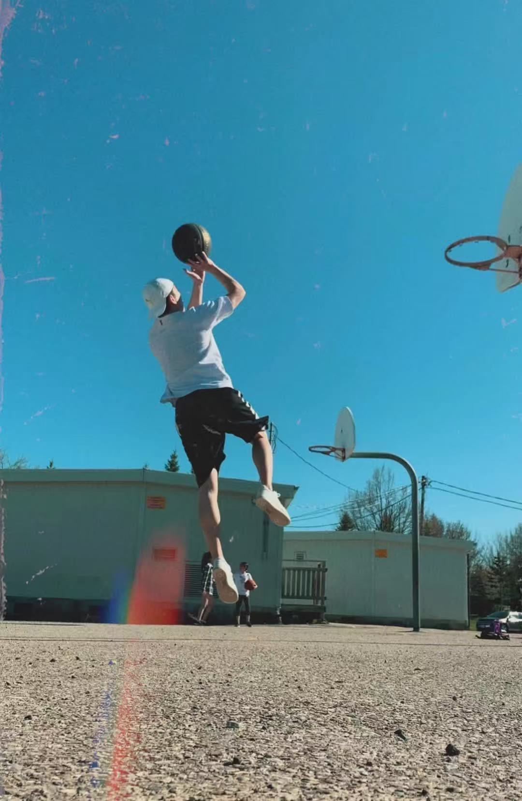

Life beyond academia.
Outside work, I enjoy playing basketball, hiking, and spending time outdoors. I appreciate the simple pleasures of a game with friends, a quiet trail, and a new view along the way.


Always happy to share a trail recommendation or join a friendly game.